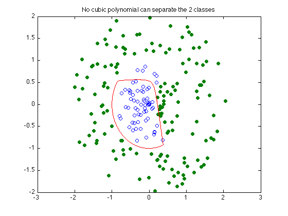

% Section 8.6.2, Boyd & Vandenberghe "Convex Optimization" % Original by Lieven Vandenberghe % Adapted for CVX by Joelle Skaf - 10/23/05 % (a figure is generated) % % The goal is to find the polynomial of degree 3 on R^n that separates % two sets of points {x_1,...,x_N} and {y_1,...,y_N}. We are trying to find % the coefficients of an order-3-polynomial P(x) that would satisfy: % minimize t % s.t. P(x_i) <= t for i = 1,...,N % P(y_i) >= t for i = 1,...,M % Data generation rand('state',0); N = 100; M = 120; % The points X lie within a circle of radius 0.9, with a wedge of points % near [1.1,0] removed. The points Y lie outside a circle of radius 1.1, % with a wedge of points near [1.1,0] added. The wedges are precisely what % makes the separation difficult and interesting. X = 2 * rand(2,N) - 1; X = X * diag(0.9*rand(1,N)./sqrt(sum(X.^2))); Y = 2 * rand(2,M) - 1; Y = Y * diag((1.1+rand(1,M))./sqrt(sum(Y.^2))); d = sqrt(sum((X-[1.1;0]*ones(1,N)).^2)); Y = [ Y, X(:,d<0.9) ]; X = X(:,d>1); N = size(X,2); M = size(Y,2); % Construct Vandermonde-style monomial matrices p1 = [0,0,1,0,1,2,0,1,2,3]'; p2 = [0,1,1,2,2,2,3,3,3,3]'-p1; np = length(p1); op = ones(np,1); monX = X(op,:) .^ p1(:,ones(1,N)) .* X(2*op,:) .^ p2(:,ones(1,N)); monY = Y(op,:) .^ p1(:,ones(1,M)) .* Y(2*op,:) .^ p2(:,ones(1,M)); % Solution via CVX fprintf(1,'Finding the optimal polynomial of order 4 that separates the 2 classes...'); cvx_begin variables a(np) t(1) minimize ( t ) a'*monX <= t; a'*monY >= -t; cvx_end fprintf(1,'Done! \n'); % Displaying results nopts = 2000; angles = linspace(0,2*pi,nopts); cont = zeros(2,nopts); for i=1:nopts v = [cos(angles(i)); sin(angles(i))]; l = 0; u = 1; while ( u - l > 1e-3 ) s = (u+l)/2; x = s * v; if a' * ( x(op,:) .^ p1 .* x(2*op) .^ p2 ) > 0, u = s; else l = s; end end; s = (u+l)/2; cont(:,i) = s*v; end; graph=plot(X(1,:),X(2,:),'o', Y(1,:), Y(2,:),'o', cont(1,:), cont(2,:), '-'); set(graph(2),'MarkerFaceColor',[0 0.5 0]); title('No cubic polynomial can separate the 2 classes') % Results disp('-----------------------------------------------------------------'); disp('As seen on the figure, the 2 sets of points are not separated. '); disp('There exists no cubic polynomial that can separate these 2 sets.');
Finding the optimal polynomial of order 4 that separates the 2 classes...
Calling Mosek 9.1.9: 211 variables, 11 equality constraints
For improved efficiency, Mosek is solving the dual problem.
------------------------------------------------------------
MOSEK Version 9.1.9 (Build date: 2019-11-21 11:32:15)
Copyright (c) MOSEK ApS, Denmark. WWW: mosek.com
Platform: MACOSX/64-X86
Problem
Name :
Objective sense : min
Type : LO (linear optimization problem)
Constraints : 11
Cones : 0
Scalar variables : 211
Matrix variables : 0
Integer variables : 0
Optimizer started.
Presolve started.
Linear dependency checker started.
Linear dependency checker terminated.
Eliminator started.
Freed constraints in eliminator : 0
Eliminator terminated.
Eliminator - tries : 1 time : 0.00
Lin. dep. - tries : 1 time : 0.00
Lin. dep. - number : 0
Presolve terminated. Time: 0.00
Problem
Name :
Objective sense : min
Type : LO (linear optimization problem)
Constraints : 11
Cones : 0
Scalar variables : 211
Matrix variables : 0
Integer variables : 0
Optimizer - threads : 8
Optimizer - solved problem : the primal
Optimizer - Constraints : 11
Optimizer - Cones : 0
Optimizer - Scalar variables : 211 conic : 0
Optimizer - Semi-definite variables: 0 scalarized : 0
Factor - setup time : 0.00 dense det. time : 0.00
Factor - ML order time : 0.00 GP order time : 0.00
Factor - nonzeros before factor : 66 after factor : 66
Factor - dense dim. : 0 flops : 2.84e+04
ITE PFEAS DFEAS GFEAS PRSTATUS POBJ DOBJ MU TIME
0 3.0e+02 1.4e+00 1.4e+00 0.00e+00 0.000000000e+00 0.000000000e+00 2.0e+00 0.00
1 8.1e+01 3.8e-01 3.8e-01 2.95e+00 0.000000000e+00 -9.997532509e-03 5.4e-01 0.01
2 2.8e+01 1.3e-01 1.3e-01 1.47e+00 0.000000000e+00 -4.345080433e-03 1.9e-01 0.01
3 1.0e+01 5.0e-02 5.0e-02 1.20e+00 0.000000000e+00 -1.262252939e-03 7.0e-02 0.01
4 4.2e+00 2.0e-02 2.0e-02 2.06e+00 0.000000000e+00 -2.796784360e-04 2.8e-02 0.01
5 1.2e+00 5.8e-03 5.8e-03 2.07e+00 0.000000000e+00 -4.492624012e-05 8.2e-03 0.01
6 4.1e-02 1.9e-04 1.9e-04 1.27e+00 0.000000000e+00 -1.293389193e-06 2.7e-04 0.01
7 6.0e-06 2.9e-08 2.9e-08 1.01e+00 0.000000000e+00 -1.897628653e-10 4.0e-08 0.01
8 6.1e-10 2.9e-12 2.9e-12 1.00e+00 0.000000000e+00 -1.897626824e-14 4.0e-12 0.01
Basis identification started.
Primal basis identification phase started.
Primal basis identification phase terminated. Time: 0.00
Dual basis identification phase started.
Dual basis identification phase terminated. Time: 0.00
Basis identification terminated. Time: 0.00
Optimizer terminated. Time: 0.02
Interior-point solution summary
Problem status : PRIMAL_AND_DUAL_FEASIBLE
Solution status : OPTIMAL
Primal. obj: 0.0000000000e+00 nrm: 1e+00 Viol. con: 4e-12 var: 0e+00
Dual. obj: -1.8976268235e-14 nrm: 6e-12 Viol. con: 0e+00 var: 0e+00
Basic solution summary
Problem status : PRIMAL_AND_DUAL_FEASIBLE
Solution status : OPTIMAL
Primal. obj: 0.0000000000e+00 nrm: 1e+00 Viol. con: 2e-16 var: 9e-19
Dual. obj: -1.8976268235e-14 nrm: 6e-12 Viol. con: 0e+00 var: 2e-14
Optimizer summary
Optimizer - time: 0.02
Interior-point - iterations : 8 time: 0.01
Basis identification - time: 0.00
Primal - iterations : 201 time: 0.00
Dual - iterations : 0 time: 0.00
Clean primal - iterations : 0 time: 0.00
Clean dual - iterations : 0 time: 0.00
Simplex - time: 0.00
Primal simplex - iterations : 0 time: 0.00
Dual simplex - iterations : 0 time: 0.00
Mixed integer - relaxations: 0 time: 0.00
------------------------------------------------------------
Status: Solved
Optimal value (cvx_optval): +1.89763e-14
Done!
-----------------------------------------------------------------
As seen on the figure, the 2 sets of points are not separated.
There exists no cubic polynomial that can separate these 2 sets.
